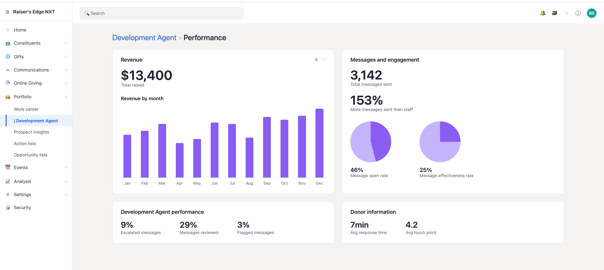
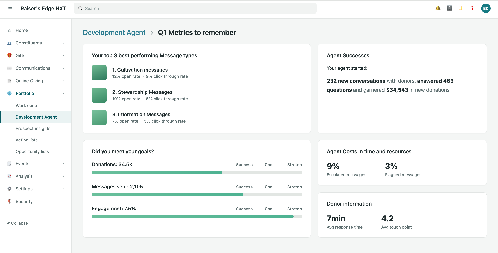

Users have repeatedly told us that performance metrics are crucial to understanding the effectiveness of this new fundraising tool. In this new world of AI agents, we needed to determine if traditional dashboards still deliver genuine value to users.
- Too much data, not enough clarity: Users track 12+ data points, making traditional dashboards feel fragmented.
- Fundraisers want insight, not raw metrics: Nonprofits want to understand what the data means, not just see spreadsheets.
- Reducing anxiety: Dashboards should drive action and confidence rather than adding frustration.
- Financials: Total Revenue / New Donations
- Volume & Activity: Total Messages Sent, Comparison to Staff Volume, New Donor Conversations, Questions Answered
- Engagement: Open Rate, Effectiveness Rate, Click-Through Rate (by message type), Overall Engagement %
Nurturing relationships with donors takes time (up to 6 months), but users evaluate success from day one of a contract. Passive dashboards risk creating a frustrating experience during this long lead time.
We hypothesized that alternative data visualization formats, such as report cards or narrative "wrapped" experiences, would better communicate performance and reduce user anxiety compared to classic dashboards.

Real-time revenue trend lines and engagement pie charts give an at-a-glance read on whether the agent is on target. Escalated, reviewed, and flagged message tiles act as a quick operational health check.
"Familiar and comforting, but I need more context and better filtering."

Curated cards like "Your top 3 best performing message types" and "Agent Successes" turn the data into a shareable story of impact, built to be put in front of a board, leadership team, or funder.
"This actually feels like something I'd be proud to show my board."

Metrics are grouped into thematic pillars (Revenue, Engagement, Costs, Experience) and summarized as a letter grade, answering "how is the agent doing?" without asking the user to interpret raw numbers themselves.
"It feels like I'm the one being graded, not the agent."
Our user testing led to a critical realization. We realized that our static dashboard concepts would likely cause anxiety for fundraisers. Because the agent's strategy involves sending five non-fundraising emails over several weeks before making an ask, the "Total Raised" metric would likely sit at $0 for the first six months. Seeing a stagnant zero would be disheartening for any user.
We pivoted by brainstorming a weekly report that focuses on active, meaningful data. Instead of forcing a static dashboard, we leaned into the "Spotify Wrapped" narrative approach as our primary way to communicate performance. We also added context by comparing current metrics to the previous week's performance. While it wasn't a silver bullet, it provided a necessary benchmark that turned a potential frustration into a clear, steady measure of progress.
Our goal was to design a performance page that feels:
- Understandable: It cuts through the noise and provides clarity without requiring data analyst skills.
- Shareable: It's polished and ready to be put in front of boards, leadership, or funders.
- Actionable: It connects directly to real-world organizational decisions.
Moving to a narrative-driven, "Wrapped" style changed the game. Instead of just watching raw data, fundraisers started feeling like they were telling the story of the agent's impact, which naturally built more confidence and pride. The real shift happened when they stopped micromanaging every email and started confidently sharing the weekly reports directly with their managers and boards.
Our strategy is really about transparency. By showing real-time revenue targets alongside the narrative wins, we give leadership the high-level insights they actually need. Since this agent is a big investment for our clients, proving that value is crucial for renewals. We basically took what felt like a mysterious black box and turned it into a partner that our clients can actually trust.